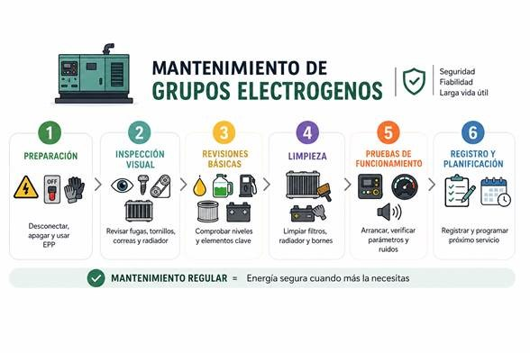

Generación de Energía (Power Generation)
Servicio técnico oficial especializado en el mantenimiento preventivo y correctivo de motores diésel para grupos electrógenos y plantas de emergencia.
- Revisiones semestrales programadas e inspección de consumibles.
- Diagnóstico avanzado de centralitas y sistemas electrónicos con VODIA.
- Reparación de sistemas de inyección, turbos y post-tratamiento (SCR).


Maquinaria Industrial (Off-Road)
Asistencia técnica integral para maquinaria de obras públicas, equipos de minería, motobombas y aplicaciones móviles industriales.
- Intervenciones mecánicas in situ con unidades móviles equipadas.
- Verificación de sistemas hidráulicos, eléctricos y de potencia.
- Sustitución de componentes críticos y cumplimiento normativo estricto.
¿Necesita asistencia para su motor industrial?
Póngase en contacto con nuestro equipo técnico en Sevilla o consulte los canales oficiales de soporte de la marca.